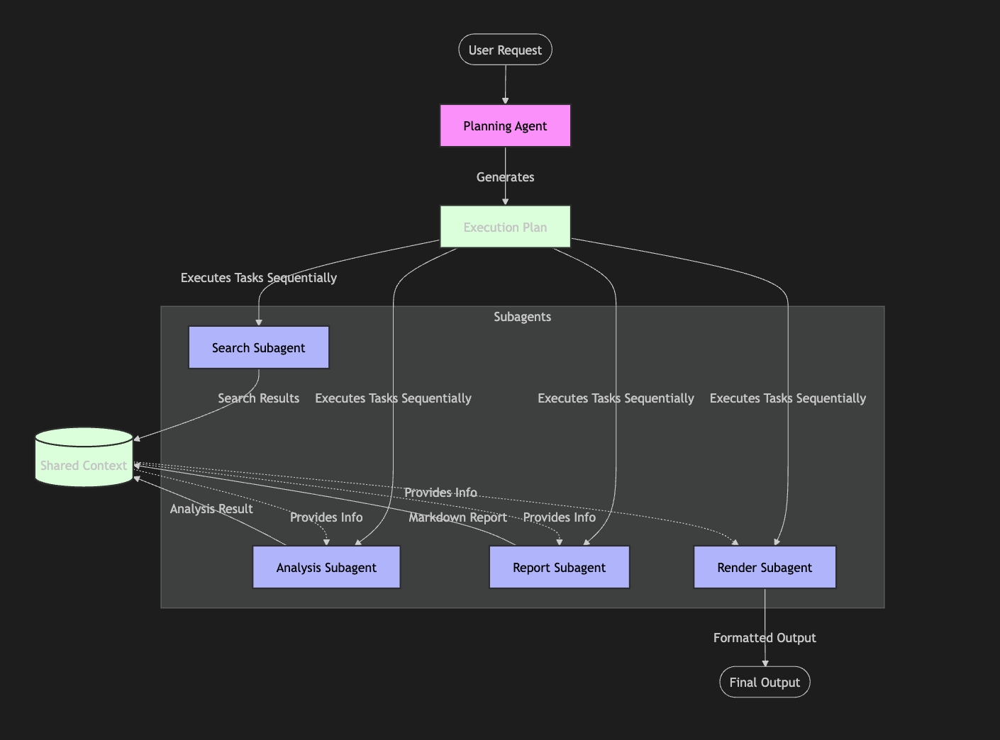

GoSkills Agent: Pure Go Deep Research Agent
Zero framework dependencies, extremely lightweight, making the power of Deep Research accessible!
Project code located at: https://github.com/smallnest/goskills/
Have you ever been confused by complex Agent frameworks (such as LangChain, AutoGen)? Do you long for a powerful deep research assistant like ByteDance's Deer Flow, but suffer from the lack of a suitable Go language implementation?
Today, we proudly introduce GoSkills Agent — a Deep Research agent built entirely using the Go language native standard library and lightweight tools! It does not rely on any bloated third-party Agent frameworks, demonstrating the core logic of Agentic AI with the purest code.
It is not just a tool, but a return to and exploration of the essence of Agents. Get ready, let's uncover its mystery together!
0. Background and Features
In the AI 2.0 era, Deep Research has become the jewel in the crown of the Agent field. It requires AI not just to answer questions, but to act like a human researcher: Deconstruct Goal -> Collect Information -> Read and Analyze -> Comprehensive Report.
Although there are many implementations in the Python ecosystem, in the Go language world, we have always longed for a high-performance, easy-to-deploy, and logically clear Deep Research solution.
GoSkills Agent was born. It has the following core capabilities:
- Autonomous Planning: Automatically decomposes user questions into subtasks such as search, analysis, and report writing.
- Deep Search: Integrates Tavily search tool to obtain the latest information on the Internet in real time.
- Intelligent Analysis: Denoises, refines, and deeply thinks about massive search results.
- Professional Reporting: Finally generates a structured and detailed Markdown research report.
- Native TUI (Terminal UI): Provides a geek-style interactive interface similar to Gemini CLI, with a silky smooth experience.
1. Compilation
The compilation process of GoSkills Agent is extremely simple, thanks to the powerful toolchain of the Go language.
Ensure you have installed the Go 1.25+ environment.
# Clone the project
git clone https://github.com/smallnest/goskills.git
cd goskills
# Compile with one click using Makefile
make agent
# Or use go build directly
go build -o agent-cli ./cmd/agent-cliAfter compilation is complete, you will see the agent-cli executable file in the current
directory.
2. Installation
Since the Go compilation product is a statically linked binary file, you do not need to install any Python dependencies or configure complex virtual environments.
Just move agent-cli to your system PATH:
mv agent-cli /usr/local/bin/Now, you can wake up your deep research assistant via the agent-cli command anywhere!
3. Usage
Start the Agent, and you will see a beautifully designed TUI interface:
agent-cliInteraction Instructions:
- Directly input your research topic, for example: "Analyze the latest breakthroughs in quantum computing in 2024"
\help: View help information\clear: Clear context history\exitor\quit: Exit the program
Example:
3.1 Start agent-cli
First set a few environment variables:
# Here I use Baidu Intelligent Cloud's deepseek service, you can modify it to your service information
export OPENAI_API_KEY=YOUR_KEY
export OPENAI_API_BASE=https://qianfan.baidubce.com/v2
export OPENAI_MODEL=deepseek-v3
# Apply for a key at https://www.tavily.com/, there is a free quota. Need to use it to search for web resources
export TAVILY_API_KEY=tvly-dev-xxxxxxxxxxxxxxxxThen start the program, it is recommended to add -v to display debugging information, which
is convenient for you to observe the agent processing flow:
agent-cli -v- Use the
\exitcommand to exit the program - Use the
\helpcommand or\quitcommand to seek help - Use the
\clearcommand to clear context history
3.2 Input request, agent starts planning

In this example, we ask the agent to output an analysis report for "Please explain quantum computing technology in simple terms. Please use Chinese for the report."
3.3 Search and Analysis

Then, according to the plan, search for materials, and then give the search results to the LLM for analysis.
3.4 Generate Report

Provide the analysis results to the LLM and generate an analysis report (markdown format) as required.
3.5 Render and Output Report

Because the generated report is in markdown format, it does not look good in the terminal, so this sub-agent renders the markdown format into a more beautiful format and outputs it.
Such a complete process is completed.
If you are still unsatisfied, you can continue to ask questions in this session, or use
\exit to exit the program.
4. Specific Implementation Principles
The core charm of GoSkills Agent lies in its Framework-less design. We did not use any black box SDK, but implemented complex Agent behaviors through a clear Planner-Executor-SubAgents pattern.
4.1 Workflow
The entire Agent's running process is a closed-loop feedback system:

- Perception: Receive user input.
- Planning: Planning Agent uses the reasoning ability of LLM to transform vague
requirements into a structured
Plan(containing a series of orderedTasks). - Execution: The main loop sequentially schedules the corresponding Subagent to execute tasks.
- Memory: The output of all Subagents will be aggregated into the Shared Context for subsequent steps to use.
- Expression: Render Subagent renders the final result into a terminal-friendly format.
At the same time, human-in-the-loop is introduced, allowing users to modify plans and
participate in the execution of subagents.
4.2 Component Introduction
The code structure is clear and highly modular:
- Planning Agent (
agent.go): The commander of the system. It is responsible for understanding intentions, generating plans in JSON format, and dynamically adjusting strategies based on execution results. It maintains the global context memory. - Search Subagent (
subagents.go): Information collector. Integrated with Tavily API, capable of performing high-quality Internet searches, and supports automatic page turning and result preview. - Analysis Subagent (
subagents.go): Logical thinker. It reads the searched original text, extracts key information, identifies contradictions, and performs logical reasoning. - Report Subagent (
subagents.go): Content creator. Based on the analysis results, it can write structured and standardized Markdown reports. - Render Subagent (
subagents.go): Visual designer. Using thego-term-markdownlibrary, it converts boring text into terminal output with colors, tables, and code highlighting. - TUI (
cmd/agent-cli/tui.go): Interaction layer. A modern command-line interface built using thebubbleteaframework, supporting dynamic resizing, color highlighting, and a silky input experience. Implements a geek-style interactive interface similar toClaude CodeandGemini CLI.
4.3 Future Planning
GoSkills Agent is just a beginning, we have a grand vision:
- Long-term Memory: Introduce vector database to give Agent the ability of "photographic memory".
- Checkpoints: Add management capabilities for checkpoints, allowing Agent to resume execution.
- Multimodal: Ability to generate podcasts, PPTs.
- Tool Ecosystem: Add support for middleware and expand the ecosystem.